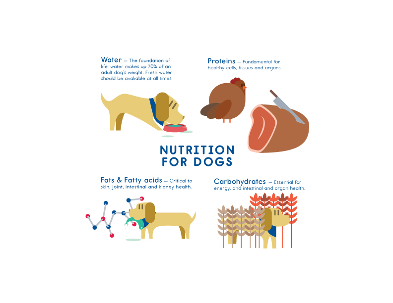

Dogs Nutritions
Whether you feed your dog a premium commercial food or prepare homemade meals, it is important to understand the fundamentals of canine nutrition. Here is a review of the basics to help you get started in making the right and informed choices for your dog. There are six major classes of nutrients: protein, fat, carbohydrates, vitamins, minerals and water. It all begins with energy, the basic requirement of life. The energy content(measured in calories) of a food is determined by how much of the first three elements the food contains. Vitamins and minerals are also essential for many functions of the body and, because about 70 percent of a dog’s body is made up of water, that too is critical.
PROTEINS
Proteins are complex molecules made up of amino acids, the building blocks of cell growth, maintenance and repair. In companion animals, one of the biggest demands for protein comes from the maintenance of fur and hair, which can use up to 30 percent of the daily protein intake, according to Barbara Fougère, BVSc. Proteins are made up of 20 amino acids. While dogs, cats and even humans produce about half of these amino acids internally, the other half, termed “essential amino acids,” need to be provided by the diet. The 10 essential amino acids are arginine, histidine, isoleucine, leucine, lysine, methionine, phenylalanine, threonine, tryptophan and valine. If even one of these “essentials” is deficient, as Lowell Ackerman, DVM, explains, the body cannot make specific proteins effectively. Amino acids work in a step-by-step fashion to manufacture protein.
If one of the steps is missing, the process stops. The biological value of proteins indicates how efficiently an animal utilizes them. Animal nutrition expert Donald Strombeck, DVM, notes that this value is high for proteins from meat, most meat by-products, eggs and dairy products. “Dogs digest these proteins efficiently and they provide amino acids in proportions suitable for tissue protein synthesis. In contrast, the biological value of most plant proteins is low, due to insufficiencies of specific amino acids and lower digestibility.”
FATS
Fats provide the most concentrated source of energy in the diet. They also supply the fatty acids that are important building blocks for important substances and essential to maintaining normal, healthy cells. Along with protein, fats contribute to a diet’s palatability, plus aid absorption of the fatsoluble vitamins A, E, D and K. Like protein’s essential amino acids, fat has its own essential fatty acids (EFAs): linoleic acid, linolenic acid and arachidonic acid. Because they make up an important part of every cell, they are also required by animals. Linoleic acid is the source of omega-6 fatty acids, and linolenic acid is the source of omega-3 fatty acids. According to Strombeck, animals need more omega-6 (linoleic acid) than omega-3 fatty acids for health.
CARBOHYDRATES
Although dogs do not need carbohydrates because their bodies can get energy from protein and fats alone, carbohydrates that can be broken down by the digestive system and converted to glucose can also be a source of energy. (Carbs can be the main caloric source in some dog foods.) Carbohydrates in the form of whole grains can furnish iron, minerals and fiber as well as other beneficial nutrients. Since cooking determines starch digestibility, and therefore its availability, starches need to be well cooked; otherwise, they tend to ferment in the large intestine. Carbohydrates can be found in vegetables and fruit, which also supply minerals, fiber, antioxidants, phytochemicals and some protein.
VITAMINS
Fresh, wholesome food provides your dog (as well as you) with the best source of vitamins, organic substances required for normal functioning of the body. They are also important in the conversion of calories to energy. Ackerman points out that they are needed in only small amounts: “All of the vitamins needed by your dog on a daily basis could be provided by a fraction of a teaspoon.” (See chart on for ingredient sources for vitamins and minerals.)